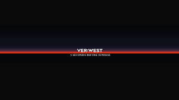

Tiësto, uno de los artistas más veteranos en la música electrónica, presenta su nuevo alias VER:WEST, con el que se espera que produzca melodic house.
Hace escasos días Paul Van Dyk nos sorprendía subiendo una foto a redes sociales con Tiësto donde ponía "Trance Family", esto sumado a un tweet en el que Tiësto mencionaba que iba a revelar grandes noticias hacía que las expectativas
sobre su anuncio siguiesen creciendo.
Finalmente hoy, las dudas han sido despejadas y el artista holandés nos ha presentado su nuevo proyecto, lo que no esperábamos era que estuviese relacionado con el melodic house. De este modo, el artista holandés nos ha presentado
su nuevo alias» VER:WEST«. Un alias con unos sonidos más similares al melodic house, desmarcandose así del Big Room al que nos ha tenido acostumbrados en estos últimos años.
El nombre proviene del apellido del artista, el cual es Tijs Michiel Verwest, su próximo tema «5 Seconds Before Sunsire» vendrá bajo este nuevo alias, con tantas señales, se nos hace cada vez más fácil pensar en un proyecto
completamente novedoso del artista Holandés.
Denle un clic a la foto de abajo para que conozcan las canciones de Ver-West.
